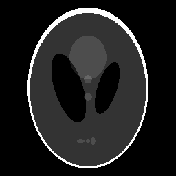
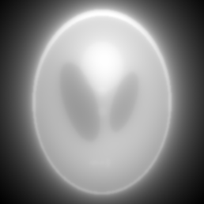
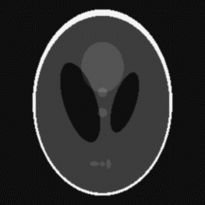

Lab 1
Na pierwszym laboratorium zajmowaliśmy się Transformatą Radona.
Zastosowanie transformaty Radona na obrazie to nic innego jak utworzenie jego projekcji (2D - rzut na oś, 3D - rzut na płaszczyznę) pod danym kątem. Przykładem takiej operacji może być projekcja w tomografii komputerowej CT. Wykorzystując odwrotną transformatę Radona odtwarzamy obraz badanego obiektu poprzez złożenie wielu projekcji wykonanych z różnych kierunków.
Obraz, który był przetwarzany to popularny w dziedzinie przetwarzania obrazów Phantom o wymiarach 256x256 pixeli.
|  Phantom - oryginał |
{kind=link}
Już tutaj można napotkać pewne problemy. Otóż funkcja phantom() generuje macierz, której komórki zawierają zmienne typu double, zarówno dodatnie jak i ujemne. Z kolei funkcja imshow() oczekuje macierzy wypełnionej zmiennymi typu uint8, w dodatku w przedziale <0, 255>.
Funkcja imshow() przyjmuje jako drugi parametr tzw. colormap, i aby poprawnie wyświetlić każdą modyfikację phantoma przy jej pomocy należy przekazać w tym miejscu pustą tablicę [ ].
Dzięki obliczeniu kolejno transformaty, a następnie odwrotnej transformaty Radona udało się odtworzyć obraz.
R = radon(I, theta)
I = iradon(R, theta, interpolation, filter)
Transformata Radona pozwala uzyskać projekcję obrazu pod danym kątem. Podając jako drugi parametr do funkcji radon(I, theta) wektor zawierający wiele kątów uzyskujemy macierz, w której każdy wiersz jest obliczoną transformatą Radona dla projekcji pod podanym kątem. Podając wektor zawierający 180 kątów z przedziału <1,180> uzyskujemy 180 projekcji.
Odwrotna transformata Radona pozwala na odtworzenie obrazu na podstawie wielu projekcji. Jako parametry funkcji iradon() należy podać macierz zawierającą transformaty Radona dla odpowiednich kątów, kąty tych projekcji, metodę interpolacja wykorzystywanej w projekcji wstecznej oraz zastosowany filtr.
Domyślna parametry to interpolacja liniowa oraz filtr Ram-Lak.
Na poniższych obrazach zaprezentowano kolejno oryginalny obraz Phantom, obraz odtworzony z 180 projekcji bez filtru oraz z filtrem Ram-Lak.
Odtworzony obraz niepoddany filtrowaniu wydaje się być pokryty mgłą i nie jest w pełni wyraźny. Wynika to z faktu, że zastosowana metoda nadreprezentuje niskie częstotliwości w obrazie wynikowym kosztem częstotliwości wysokich. Niestety krawędzie w obrazie są reprezentowane przez wysokie częstotliwości, w związku z czym obraz wynikowy wydaje się być "rozmazany". Zastosowanie odpowiedniego filtru pozwala wyeliminować ten efekt.
| Oryginał |  Projekcja wsteczna bez filtru |  Projekcja wsteczna z filtrem Ram-Lak |
{kind=link}
{kind=link}
Odzyskanie obrazu z 180 projekcji dało bardzo dobre efekty po zastosowaniu filtru. Kolejne kroki to zbadanie jak liczba projekcji, oraz inne czynniki, wpływają na jakość obrazu wynikowego.